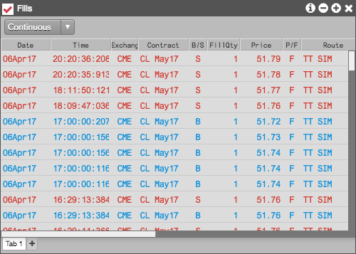

The Fills widget displays all of your fills from the current and previous sessions. The Fills widget displays parent order fills, child order fills, and any administrative fills an administrator at your company may have added to your account. Fills are displayed for the last 7 days and are sorted in reverse chronological order so the most recent fills appear at the top of the list.
